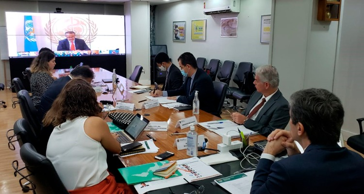

Plantão COVID-19: As boas notícias! EP#01 – TecMundo
03 ABR 2020
Não é só de notícia ruim que o mundo vive: muitas coisas boas estão acontecendo nessa pandemia. A humanidade é resiliente e estamos juntos nessa. Acompanhe as notícias sobre como a curva de infectados está sendo achatada e como um bebê de 50 dias virou um símbolo de esperança na Itália.
Os povos indígenas isolados também estão em isolamento voluntário
Se os governos não protegerem os territórios indígenas e instaurarem o isolamento social, o coronavírus poderá concluir o genocídio dos povos isolados da Amazônia, que começou há 500 anos, 19 ABR 2020
 Foto de Marcus Pinho no Pexels
Foto de Marcus Pinho no Pexels
“Nós estávamos na aldeia e todos começaram a morrer. Alguns adentraram a floresta e por lá morreram. Nós todos estávamos doentes e fracos, e nem podíamos enterrar os mortos. Os corpos ficavam apodrecendo no chão. Os urubus comeram tudo.”
As epidemias podem assolar comunidades indígenas em questão de dias. Imagine o tamanho do esforço para continuar enquanto, ao seu redor, seus entes queridos estão morrendo sem motivo aparente e com uma rapidez impressionante. Os efeitos devastadores de novas doenças são terrivelmente conhecidos pelos povos indígenas das Américas dos quais até 90% foram mortos por doenças introduzidas por colonizadores nos últimos 500 anos.
A citação acima é de Ake, um homem panará. Os Panará são um povo indígena que evitava desesperadamente o contato até o início da década de 1970, quando invasores abriram uma estrada no meio de seu lar na floresta. Entre 1973 e 1975, mais de um terço da população Panará morreu de doenças e 80% morreram em apenas oito anos.
O impacto catastrófico de novas doenças é uma das razões pelas quais hoje existem mais de 100 povos indígenas no mundo que deliberadamente evitam o contato com pessoas de fora. Eles são conhecidos como povos indígenas isolados e a maioria vive na Amazônia. Os encontros anteriores desses indígenas com pessoas de fora provavelmente levaram a muitas mortes, pela violência e pelas doenças trazidas por aqueles que invadiram suas terras. Muitos indígenas isolados fugiram e alguns são descendentes dos sobreviventes do boom da borracha que ocorreu no início do século XX. Alguns sofreram ataques genocidas há décadas, outros mais recentemente.
Leia mais em: El País
Coronavírus: 5 fatores que fizeram dos EUA o novo epicentro da covid-19
09 ABR 2020
Falta de testes, falha no rastreamento, escassez de insumos médicos, inconsistências no comportamento do presidente Donald Trump e ausência de uma resposta central. Esses são os fatores apontados por especialistas à correspondente da BBC News Brasil em Washington, Mariana Sanches, para explicar a escalada da epidemia americana. Hoje, de cada 4 vítimas de Covid-19, uma está nos Estados Unidos.
Coronavírus: por que alguns países estão instruindo cidadãos a usar máscara — e o que se sabe sobre a eficácia delas?
É consenso entre especialistas em saúde pública que o distanciamento social e a higiene são fatores essenciais para conter a disseminação do coronavírus.
Foto de Gustavo Fring no PexelsA Organização Mundial da Saúde (OMS) diz que devem usar máscara pessoas com sintomas da doença ou que estejam cuidando de doentes da covid-19.
Um dos motivos para a recomendação é evitar que pessoas que não precisam acabem deixando sem máscaras aquelas que de fato têm necessidade de tê-las, principalmente profissionais de saúde. No Brasil, profissionais de saúde vêm denunciando a falta de equipamento de proteção nas unidades médicas.
Nesta quinta-feira (02/04), o jornal O Globo noticiou que o estoque de equipamentos de proteção individual (como máscaras ou roupas especiais) do Ministério da Saúde já está zerado.
"A população deveria, sim, estar usando máscaras. Ao mesmo tempo, (a população) não pode usar máscaras que deveriam estar sendo direcionadas para profissionais de saúde e outros que estão na linha de frente - as máscaras N95 e as cirúrgicas. Há falta delas agora e seguirá havendo. Por isso, recomendo o uso de máscaras caseiras", diz Joseph Allen, professor do Departamento de Saúde Ambiental da Universidade de Harvard e diretor do Programa de Edifícios Saudáveis da Escola de Saúde Pública Chan da universidade.
Leia mais em: BBC
Como conter o novo coronavírus e quais os desafios do Brasil na pandemia
19 ABR 2020
Limitações do sistema de saúde, desigualdades regionais e de renda, dificuldade em praticar o distanciamento social, escassez de testes e falta de dados consolidados e padronizados são alguns dos problemas que o combate à pandemia do novo coronavírus encontra no Brasil.
Neste documentário, com narração do jornalista Rodrigo Vizeu e produção dos jornalistas Melina Cardoso, Henrique Santana e Victor Parolin, a Folha mapeia os problemas desde o registro do primeiro caso no Brasil, no fim de fevereiro, e as dificuldades que o país tem para lidar com a pandemia, além de tratar de possíveis soluções.
Ministros da Saúde do G20 se comprometem a atuar juntos contra a Covid-19
Durante videoconferência na manhã deste domingo, os ministros da Saúde debateram a pandemia por Covid-19 e seus impactos
Os ministros da Saúde do G20 reafirmaram, neste domingo (19), o compromisso em apresentar uma frente unida contra a ameaça comum, que é a pandemia da Covid-19, “uma emergência de saúde sem precedentes”. Por meio de videoconferência, os países que integram as principais economias do mundo, discutiram o impacto da Covid-19 e discutiram ações para o fortalecimento das redes de atenção à saúde para uma resposta coordenada à pandemia, através de um esforço global urgente, inclusive, apoiando os países com sistemas mais fracos na luta contra a doença para minimizar a perda de vidas.
O ministro da Saúde, Nelson Teich, reconheceu que os sistemas de saúde do mundo nunca mais serão os mesmos após à pandemia por COVID-19. “É fundamental entendermos a doença e a sua evolução, como preparar o sistema para atender as pessoas que adoecem e definir os próximos passos. E, ainda, de que forma vamos usar os testes de diagnóstico na população para que possamos entender melhor a prevalência e a evolução da doença”, avaliou Teich durante a videoconferência realizada nesta manhã.
A videoconferência contou com a presença do diretor-geral da Organização Mundial da Saúde, Tedros Adhanom, que agradeceu o empenho dos ministros da Saúde em estarem juntos, discutindo soluções para enfrentamento à doença. Em linhas gerais, o grupo se comprometeu na adoção de abordagens inovadoras para acelerar o alcance da cobertura universal através de sistemas de saúde resilientes e sustentáveis, centrados em pessoas, com acesso equitativo aos serviços.
Leia mais em: Ministério da Saúde